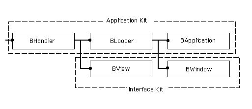
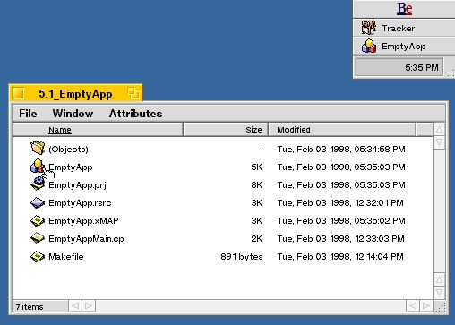
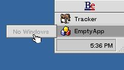
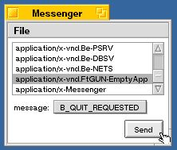
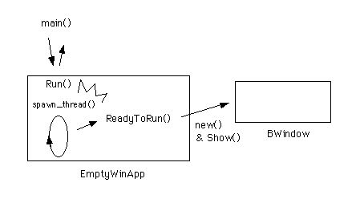
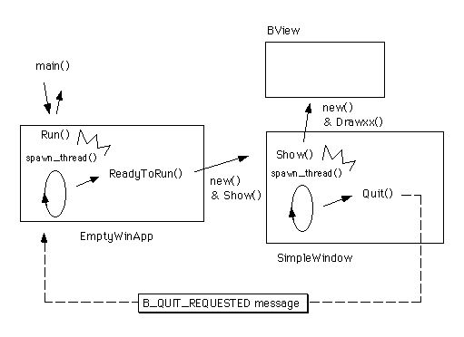
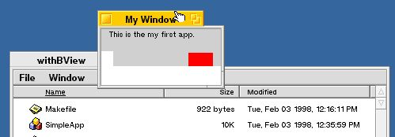
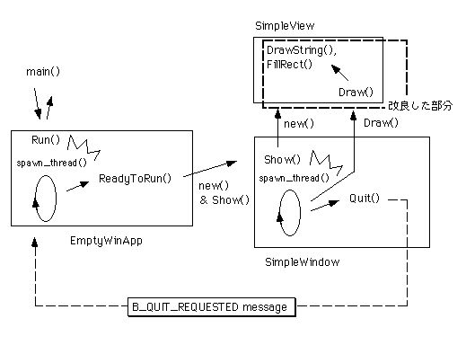
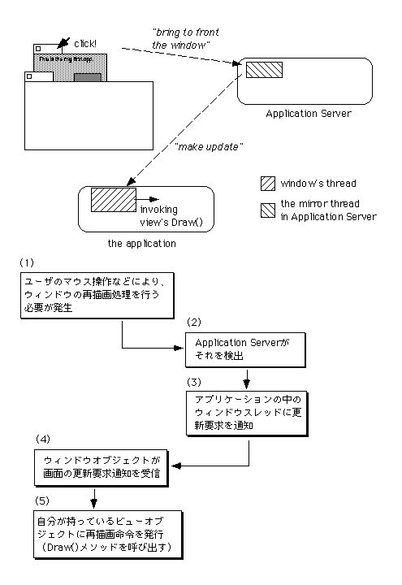

第5章 アプリケーション最初の一歩
この章からは、サンプルアプリケーションを使ってBeOSのプログラミングを解説します。最初の一歩として、この章では以下の題材をとりあげます。
◇BeOSのアプリケーションを作って動かす
◇アプリケーションが起動すると同時にウィンドウを開く
◇ウィンドウに図形や文字列を表示する
これらの題材をプログラミングするために、BeOSのAPIが提供しているクラスのうち以下のものを利用します。
●BApplication(Application Kit)
●BWindow(Interface Kit)
●BView(Interface Kit)
これらのクラスの間の階層関係を、図5.1に示します。

図[5.1] 第5章で主に扱うクラス間の階層図
プログラミングの説明に使うサンプルアプリケーションは、全部で四つ用意しています。最初の5.1節では、ウィンドウも何も表示しない、ただ動くだけのアプリケーションを作り、次にウィンドウを開くだけのアプリケーションを作ります。それから、5.2節でウィンドウに図形や文字列を表示するアプリケーションを二つ作ります。二つのアプリケーションの違いは本文で説明しますが、付録のCD-ROMに収録したものを実際に動かしてみればもっと良く分かるでしょう。では、解説を始めます。
5.1 空っぽのアプリケーション
この章の狙いは、BeOSのアプリケーションをプログラミングするのがとても簡単なのを実証することです。サンプルアプリケーションのソースコードを読めば、驚くほど簡単なプログラミングでアプリケーションを作れることが分かるでしょう。5.1.1 アプリケーションオブジェクト
では、最初のアプリケーションを作ってみます。リスト5.1が、考えられるうちで最も簡単なアプリケーションのソースコードです。
[リスト5.1] EmptyAppMain.cpの内容
#include <app/Application.h>
int
main (void)
{
BApplication appObj("application/x-vnd.FtGUN-EmptyApp");
appObj.Run();
return 0;
}
リスト5.1は、include文を入れても全部で8行(注5-1)、mainルーチンの本体だけならたった3行しかありません。たった3行しかないので、一つずつ説明します。まず、1行目の
BApplication appObj("application/x-vnd.FtGUN-EmptyApp");
では、BApplicationクラスのインスタンスを生成します。new演算子を使わず、クラス変数を宣言して生成しているので、mainルーチンが終了する時に自動解放されます。つまり、delete演算子を使って解放しないでよいので、そのぶんソースコードが短くて済みます。なお、インスタンスを生成する際、コンストラクタにはアプリケーションのシグネチャを引数として渡します。シグネチャについては第4章でリソースファイルの作成手順を示した際に説明しましたが(4.3.2)、アプリケーションを一意に識別するためのMIME文字列です。
次に、2行目の
appObj.Run();
で、生成したBApplicationクラスのインスタンス、つまりアプリケーションオブジェクトに対してRun()メソッド(注5-2)を呼び出します。このメソッドは、第3章で説明したメッセージループを実行するもので、アプリケーションオブジェクトが終了要求のメッセージを受け取るまで呼び出し側に制御を戻しません。プログラムの実行は、アプリケーションが終了するまでRun()メソッドの中に留まったままです。
最後に、3行目の
return 0;
ではmainルーチンから復帰します。戻り値として、アプリケーションの実行が正常に終わったことを示す0を返しています。どうでしょうか?こんなに簡単にアプリケーションが作れていいのかと不思議に思われるかも知れません。本当かどうか確認するために、実際にアプリケーションを作成して動かしてみてみましょう。
ソースコードを作った後、それをコンパイルしてリンクし、あらかじめ作っておいたリソースファイルと組み合わせてアプリケーションを作成するまでの手順は、第4章で既に説明したのでここでは説明しません。第4章を読みとばしてしまって手順が分からない人は、戻って説明を読んでみて下さい。なお、付録のサンプルコード集にはソースコードとリソースファイル、およびBeIDEのプロジェクトファイルとmakeユーティリティ用のMakefileを収録していますので、すぐにアプリケーションを作って動かすことができます。場所は、サンプルコード集の“5.1_EmptyApp”というフォルダです。実際にアプリケーションを作成してみて下さい。
さて、リスト5.1のソースコードを使って作ったアプリケーションを動かしてみれば、あれほど簡単なプログラミングで済んだ理由が分かります。図5.2は、このサンプルアプリケーション(EmptyApp)を動かしてみた様子のスクリーンショットです。

図[5.2] EmptyAppの起動後画面をスクリーンショット
図を見ると分かるように、EmptyAppを起動しても画面には何も現われません。画面右上隅のDeskBarに並んだメニューの中にEmptyAppの項目が現われるので、かろうじてEmptyAppが起動していることが分かるだけです。もちろん、DeskBarのメニュー項目を選んでみても、“No Windows”とそっけなく表示されるだけです。

図[5.3] DeskBarのメニューでEmptyAppを選択した画面
これはどうしてなんでしょうか?答えは簡単。ウィンドウを出すようにプログラミングしなかったからです。BApplicationクラスはウィンドウを開く機能を持っていませんから、BApplicationのサブクラスを作って機能を追加しないと、ウィンドウを出すことはできないのです。
では、SimpleAppを終了して次のサンプルアプリケーションに進みましょう。次に紹介するサンプルでは、BApplicationのサブクラスを作り、画面にウィンドウを出せるようにします。え?「どうやってEmptyAppを終了するんだ。」ですか?たしかに、このままでは終了できませんね。EmptyAppを終了するには、終了要求のメッセージを送らないといけません。もちろん、“TManager”のようなプロセス管理ツールを使って強制終了するという少々野蛮な手段もありますが、ここでは紳士的にメッセージを送って解決してみましょう。第8章でアプリケーション間通信の説明をするのに使うサンプルを一足先に取り出し、終了要求のメッセージを送るのに利用します。
以下に、第8章で使うアプリケーション間通信のサンプル(Messenger)を使ってEmptyAppを終了する手順を示します。
1.)付録のサンプルコード集から”8.1_Messenger”というフォルダを開いて下さい。その中には必要なファイルが入っているはずです。
2.)第4章の4.3.5または4.4.5で説明した手順に従い、makeコマンドを実行して下さい。“Messenger”アプリケーションが作成されます。
3.)作成した“Messenger”のアイコンをダブルクリックして起動して下さい。図5.4のように“Messenger”というタイトルのウィンドウが開かれます。

図[5.4] Messengerの起動直後画面
4.)開かれたウィンドウの中にあるリストボックスには、現在動作しているアプリケーションのシグネチャが一覧表示されます。その中に、EmptyAppのシグネチャ、つまり“application/x-vnd.FtGUN-EmptyApp”という文字列がある筈です。見つけたら、それをクリックして選択して下さい。
5.)シグネチャの一覧表示リストでEmptyAppを選択したら、次にリストボックスの下にあるポップアップメニューで、“B_QUIT_REQUESTED”を選択して下さい。

図[5.5] EmptyAppに終了メッセージを送る画面
6.)以上の操作が終わると、“Messenger”ウィンドウの表示は図5.5のようになっている筈です。この状態で、ウィンドウの右下隅にある“Send”ボタンをクリックして下さい。EmptyAppアプリケーションに終了要求メッセージが送られ、それに応えてEmptyAppが終了します。
無事EmptyAppを終了できたでしょうか?終了できたら、次の節に進んでウィンドウを出してみることにしましょう。
- (注)5-1
- 本書では、C++のメンバ関数という用語と「メソッド」という用語を同じ意味で使っています。本来メソッドはSmalltalkなどで用いられる用語ですが、筆者の習慣でC++の用語と混在させて使っています。
- (注)5-2
- ここでは、行数を数えるのに空白行をカウントしていません。途中の空白行を入れるなら、リスト5.1は全部で11行です。
5.1.2 ウィンドウを出さなきゃね
リスト5.2～5.4は、起動すると同時にウィンドウを開くアプリケーションのソースコードです。このサンプルアプリケーションは“EmptyWindow”という名前で、その名の通り、中味がない空のウィンドウを開きます。
[リスト5.2] EmptyWinApp.hの内容
#ifndef _EMPTY_WIN_APP_H_
#define _EMPTY_WIN_APP_H_
#include <app/Application.h>
/*
* EmptyWinAppクラスの定義
*/
class EmptyWinApp : public BApplication {
// メソッド
public:
// 初期化と解放
EmptyWinApp(void);
~EmptyWinApp(void);
private:
// 起動と終了
void ReadyToRun(void);
};
#endif /* _EMPTY_WIN_APP_H_ */
[リスト5.3] EmptyWinApp.cpの内容
#include "EmptyWinApp.h"
#include <interface/Window.h>
/*
* EmptyWinAppクラスの非公開メソッド
*/
void
EmptyWinApp::ReadyToRun (void)
{
BWindow* windowObj;
/* BWindowオブジェクトを生成 */
windowObj = new BWindow(
BRect(50, 50, 200, 120),
"My Window",
B_TITLED_WINDOW,
0
);
/* 画面に表示 */
windowObj->Show();
return;
}
/*
* EmptyWinAppクラスの公開メソッド
*/
EmptyWinApp::EmptyWinApp (void)
: BApplication("application/x-vnd.FtGUN-EmptyWindow")
{ /* do nothing */ }
EmptyWinApp::~EmptyWinApp (void)
{ /* do nothing */ }
[リスト5.4] EmptyWindowMain.cpの内容
#include "EmptyWinApp.h"
int
main (void)
{
EmptyWinApp appObj;
appObj.Run();
return 0;
}
上に示した三つのファイルの内容を説明します。まずリスト5.2、つまりEmptyWinApp.hは、BApplicationクラスのサブクラスを定義したインタフェースファイルです。このクラスは“EmptyWinApp”という名前で、BApplicaitonクラスの仮想メンバ関数のうち、ReadyToRun()だけを再定義して実装しています。
その次のリスト5.3、つまりEmptyWinApp.cpは、EmptyWinAppクラスの実装を書いたソースファイルです。リストの内容を上から順に見ていくと、まずReadyToRun()メソッドがあります。このメソッドでは、new演算子を使ってBWindowクラスのインスタンスを生成します。また、生成したインスタンス、つまりウィンドウオブジェクトに対してShow()メソッドを呼び出し、ウィンドウを画面に表示させます。ReadyToRun()メソッドは、アプリケーションオブジェクトがメッセージループを開始し、システム
によって届けられた初期メッセージをすべて処理し終わった後、自動的に呼び出されるものです。したがって、このメソッドの中でウィンドウを表示するようにしておけば、アプリケーションが起動した直後にウィンドウを開くことができます。ウィンドウオブジェクトを生成する際、BWindowクラスのコンストラクタに四つの引数を渡していますが、これらの説明を以下に示します。
○第一引数(BRect)
ウィンドウのフレーム矩型、つまり、画面に表示する位置と大きさを指定します。
○第二引数(const char*)
ウィンドウのタイトルを指定します。タイトルを付けない場合は、NULLを渡しても構いません。
○第三引数(window_type)
ウィンドウの種類を指定します。指定できる種類の詳細は、APIのリファレンスを参照して下さい。リスト5.3では、タイトルタブ付きのウィンドウを指定する“B_TTILED_WINDOW”を渡しています。
○第四引数(uint32)
リサイズ可能にするかどうかといった、ウィンドウの振る舞いを指定するフラグです。指定できるフラグの詳細は、APIのリファレンスを参照して下さい。リスト5.3では、デフォルトの振る舞いを指定する“0”を渡しています。
章末の練習問題でもとりあげていますが、ウィンドウの種類(window_type)やフラグの値はBWindowクラスのインタフェースファイル(Window.h)で定義されていますので、色々と指定を変えてみて、どのような違いが出るのか試してみて下さい(注5-4)。
ReadyToRun()メソッドの下には、EmptyWinAppクラスのコンストラクタとデストラクタの実装が並んでいます。リスト5.3のクラス定義を見ると分かるように、EmptyWinAppクラスは独自のデータメンバを持っていませんから、コンストラクタとデストラクタの本体は、どちらも空です。ただし、コンストラクタでは親クラス(BApplication)のコンストラクタにアプリケーションのシグネチャを渡しています。このように、BApplicationクラスのインスタンスを作る時は、必ずシグネチャを渡して初期化しないといけません(注5-3)。また、ReadyToRun()メソッドで生成したウィンドウオブジェクトを解放した部分がありませんが、ウィンドウオブジェクトはBApplicationクラスの働きによってアプリケーションの終了時に解放されますので、サブクラス側で面倒を見る必要はありません。
最後のリスト5.4(EmptyWindowMain.cp)は、EmptyWindowアプリケーションのメインルーチンです。生成しているアプリケーションオブジェクトが、BApplicationではなくEmptyWinAppクラスのインスタンスであり、またEmptyWinAppクラスのインタフェースファイル(EmptyWinApp.h)をインクルードしている以外は、リスト5.1に示したEmptyAppの場合と全く同じです。アプリケーションのmainルーチンが持つこの構造は、本書で解説に使うサンプルアプリケーション全てに共通したものです。
図5.6に、EmptyAppアプリケーションの構造を示します。EmptyWinAppオブジェクトがReadyToRun()メソッドの中でBWindowオブジェクトを生成し、Show()メソッドで表示している流れを見て下さい。この図だけでは良く分からない時は、3.2節の説明を読み返してみるとよいでしょう。

図[5.6] EmptyAppアプリケーションの構造
ソースコードの説明が終わりましたので、EmptyWindowアプリケーションを作成して実際に動かしてみましょう。EmptyWindowのソースファイルやリソースファイルは、付録のサンプルコード集の“5.2_EmptyWindow”というフォルダに入っています。このフォルダを適当な場所にコピーし、BeIDEまたはmakeユーティリティを使ってアプリケーションを作成して下さい。できたアプリケーションを起動すると、図5.7のように空のウィンドウが開くはずです。

図[5.7] EmptyWindowの起動画面
開いたウィンドウは、中味こそ何も表示しないで空っぽですが、それ以外は普通のウィンドウと全く同じように動作します。タイトルバーをドラッグして動かせば好きな場所に移動できますし、枠の右下隅部分をドラッグしてリサイズすることも可能です。タイトルバーのズームボタンを使ったズーミングや、またDeskBarのウィンドウメニュー操作にも正確に応答してくれます。これらの機能は、全てのウィンドウに共通の基本機能としてBWindowクラスに組み込まれており、アプリケーションごとにプログラミングする必要はありません。
なお、EmptyWindowを終了するときはDeskBarのウィンドウメニューから“close all”を選択して下さい。ウィンドウが閉じると同時にアプリケーションが終了します。DeskBarを使わずにウィンドウのクローズボタンを使って閉じると、EmptyAppと同様ウィンドウメニューで終了できなくなってしまいますが、その場合はMessengerアプリケーションを使って終了するとよいでしょう。
5.1.3 アプリケーションフレームワーク
さて、ここまでの説明で、この章の冒頭に掲げた三つの題材のうち既に二つをクリアしました。アプリケーションとして動くものを作るだけなら、単にBApplicationクラスのインスタンスを生成してRun()メソッドを呼び出せばよいですし、アプリケーションが起動すると同時にウィンドウを開く場合でも、BApplicationのサブクラスを作ってReadyToRun()メソッドを再定義すればそれで終わりです。再定義したメソッドの中で、BWindowクラスのインスタンスを生成してShow()メソッドを呼び出せば、あとはBWindow側で必要な処理をやってくれます。このように、BeOSアプリケーションのプログラミングでは次のやり方が基本となります。
1)APIで提供されているクラスの機能で十分であれば、それをそのまま使う
2)APIの機能だけだと不十分な場合は、サブクラスを作って必要な機能を追加する
上に書いたやり方は、C++などのオブジェクト指向言語に基づくAPIやライブラリ、特にフレームワークと呼ばれるものを利用する場合に一般的なものです。フレームワークについては第一部の1.2節でも簡単に触れましたが、互いに連携し、アプリケーションが従うべき処理の枠組みを組み込んだクラスのまとまりのことです。そうではなく、個々に独立したクラスの集合が提供されただけでは、従来一般的だった手続き指向型のAPIに比べて使いやすさはそれほど変わりません。
BeOSのAPIがフレームワークであることを示す良い例は、先ほどまでの説明で使った二つのサンプルアプリケーションです。これらのサンプルでは、単にでき合いの部品、つまりBApplicationクラスやBWindowクラスをそのまま使っただけであるにもかかわらず、BeOSアプリケーションとしての基本的な振るまいが実現されています。
EmptyAppは画面に何も表示しませんが、Messengerアプリケーションなどを使って終了要求メッセージを送れば終了してくれますし、またアバウトダイアログの表示要求メッセージを送ると、それに応えてアバウトダイアログの表示もしてくれます。好奇心の旺盛な方ならすでに試してしまったかも知れませんが、Messengerの送信メッセージとして、デフォルトの“B_ABOUT_REQUESTED”を選んでEmptyAppに送ってみて下さい。図5.7のようなアバウトダイアログが表示されるはずです(注5-5)。これらのメッセージを受け取り、それに反応するというのはBeOSアプリケーションの全てに共通したものであり、BApplicationクラスに組み込まれているのです。

図[5.8] EmptyAppのアバウトダイアログ
EmptyWindowはどうでしょうか?表示したウィンドウが、通常のウィンドウと全く同じ基本動作をすることは既に述べました。EmptyAppとEmptyWindowの違いは、起動した直後にウィンドウを開くかどうかですが、その機能を追加するために必要だった作業は、BApplicationのサブクラスを作ってメソッドを一つ再定義することだけでした。このメソッドは、サブクラス側でアプリケーションの動作を自由にカスタマイズできるように用意されているもので、フック関数と呼ばれます。アプリケーションを作る際に、APIで提供されているクラスに機能を追加する場合は、フック関数として用意されたメソッドのうち、必要なものだけを選んで再定義すればよいのです。全体の処理の枠組みは、元のクラスの中にあらかじめ組み込まれています。
また、DeskBarのウィンドウメニューで“close all”を選択すると、他のアプリケーションと同じようにEmptyWindowを終了できます。これは、DeskBarからの終了要求メッセージを受け取ると、BApplicationクラスの働きによってすべてのウィンドウに終了要求が伝えられ、ウィンドウの解放処理が行われるからなのです。つまり、BApplicationとBWindowとは、互いに連携したクラスなのです。
少しばかり退屈な説明が続いたかも知れませんね。はやく次のサンプルに進んで、ウィンドウに図形を表示してみることにしましょう。とはいえ、ここで少々複雑な内容について説明したのは、単純で理解しやすいサンプルを使って考える方が、より問題に集中できるからなのです。これより先に進めば進むほど、それぞれのサンプルアプリケーションがテーマにしている題材に集中していきます。すべてのアプリケーションに共通する根本的な内容は、いまのうちに考えて理解しておく方が得策です。では、次のサンプルに進みましょう。
- (注)5-3
- BApplicationのコンストラクタには、シグネチャではなくBMessageオブジェクトを受け取るものもあります。こちらの方は特別な用途でしか使わないものですから、一般的にはシグネチャを引数に渡すと考えておいて構いません。詳しくはAPIリファレンスを参照して下さい。
- (注)5-4
- 本当は、BWindowクラスのコンストラクタが受け取る引数は全部で五つです。オプションになっている五番目の引数は、ウィンドウを表示するワークスペースを指定するものです。デフォルトでは、現在画面に表示されているワークスペースが指定されますので、ここでは説明していません。
- (注)5-5
- 厳密には、MacOSのAPIはC言語ではなくPascal言語で記述されています。
- (注)5-6
- EmptyAppが出すアバウトダイアログは、デフォルト動作を実現するために、BApplicationクラスの働きによって表示されるものです。したがって完全なものではなく、B_ABOUT_REQUESTEDメッセージを続けて何度も送ると、送った数だけダイアログを開いてしまいます。これを改善する方法は、8.3節のサンプル(Scriptor)で説明します。
5.2 ウィンドウに絵を描きたい
アプリケーションを作って動かすにはBApplicationクラスが必要でした。また、ウィンドウを開くにはBWindowクラスが必要でした。そして、ウィンドウに何かを表示するには、もう一つ別のクラスが必要なのです。ウィンドウに何かを表示する、つまり描画処理を行うにはBViewクラスを使います。この節で紹介するサンプルでは、BViewクラスを使ってウィンドウに描画する方法を説明します。また、前節で紹介したEmptyWindowアプリケーションの不具合、つまりウィンドウを閉じてしまうとアプリケーションを終了できなくなる問題を解決します。5.2.1 他人と同時にゃ描けないぜ
図5.9は、この節で説明に使う“SimpleApp”というアプリケーションを起動した直後に開かれるウィンドウを撮ったものです。EmptyWindowの時と違い、ウィンドウの中味は背景がグレーに塗られ、そして“This is the my first app.”という文字列と赤い四角が表示されています。この節ではSimpleAppの二つのバージョンを紹介しますが、どちらのバージョンもそれほど複雑なものではありません。ただし、後の方がよりシンプルです。
図[5.9] SimpleAppの起動画面
まず、最初のバージョンを説明します。このバージョンでは、ウィンドウに描画する機能を追加するためにBWindowのサブクラスを作ります。前の節で説明に使ったEmptyAppとの違いは、BWindowクラスをそのまま使うのではなく、自分で作ったサブクラスを使うことだけです。リスト5.5と5.6は、その定義と実装です。また、図5.10にアプリケーションの構造を示します。
[リスト5.5] SimpleWin.hの内容
#ifndef _SIMPLE_WIN_H_
#define _SIMPLE_WIN_H_
#include <interface/Window.h>
/*
* SimpleWinクラスの定義
*/
class SimpleWin : public BWindow {
// メソッド
public:
// 初期化と解放
SimpleWin(BRect frame, const char* title,
window_type type, uint32 flags,
uint32 workspace = B_CURRENT_WORKSPACE);
~SimpleWin(void);
// 終了時処理
void Quit(void);
// 描画処理
void Show(void);
};
#endif /* _SIMPLE_WIN_H_ */
[リスト5.6] SimpleWin.cpの内容
#include "SimpleWin.h"
#include <app/Application.h>
/* SimpleWinクラスの公開メソッド */
/*
* 初期化と解放; SimpleWin
*/
SimpleWin::SimpleWin (BRect frame, const char* title,
window_type type, uint32 flags, uint32 workspace)
: BWindow(frame, title, type, flags, workspace)
{
BView* viewObj;
/* BViewオブジェクトを生成して自身に貼り付ける */
viewObj = new BView(
this->Bounds(),
"content",
B_FOLLOW_ALL_SIDES,
0);
this->AddChild(viewObj);
}
SimpleWin::~SimpleWin (void)
{ /* do nothing */ }
/*
* 終了時処理; SimpleWin
*/
void
SimpleWin::Quit (void)
{
/* アプリケーション本体に終了通知 */
be_app->PostMessage(B_QUIT_REQUESTED, be_app);
/* 親クラスのメソッドを実行 */
BWindow::Quit();
return;
}
/*
* 描画処理; SimpleWin
*/
void
SimpleWin::Show (void)
{
BView* viewObj = this->FindView("content");
rgb_color currColor = viewObj->HighColor();
/* 親クラスのメソッドを実行 */
BWindow::Show();
::snooze(40 * 1000); /* ウィンドウが表示されるのを待つ */
/* 文字列と図形を描画 */
this->Lock(); /* 自身をロック */
viewObj->SetHighColor(0xD0, 0xD0, 0xD0);
viewObj->FillRect(viewObj->Frame());
viewObj->SetHighColor(currColor);
viewObj->DrawString("This is the my first app.", BPoint(10, 10));
viewObj->SetHighColor(255, 0, 0);
viewObj->FillRect(BRect(110, 30, 140, 60));
this->Unlock(); /* ロック解除 */
this->Flush(); /* 描画命令をフラッシュ */
return;
}

図[5.10] SimpleApp(1)の構造
上に示したSimpleWinクラスは、BWindowクラスが備えているメソッドのうち、Quit()とShow()を再定義しています。Quit()を再定義したのは、前の節のEmptyWindowにあった、ウィンドウを先に閉じるとアプリケーションを終了できなくなるという問題を解決するためです。そして、描画処理機能を追加するためにSow()メソッドを再定義しました。リスト5.6に示すSimpleWinクラスの実装について、メソッドごとの説明を以下に記します。
その前に、一つだけ注意しておきます。リスト5.6の短さに比べると、これからするのは少々、いや、かなり長い説明です。読み始めると退屈になるかも知れません。でも、それはこれより後の章のサンプルを理解する基礎となる、大事なことを説明したものなのです。本書では、後の章になればなるほど説明に使うサンプルアプリケーションが大きくなります。したがって、だんだんとソースコードの説明が大ざっぱなものになり、特に9章あたりからは、APIのリファレンスガイドを片手にしないとソースコードの詳細を理解できなくなるでしょう。この章と、次の第6章を使ってBeOSのアプリケーションプログラミングの基礎を一通り解説しますので、説明をよく読み、また練習問題に挙げられた課題を使って色々なことを試し、自分なりにBeOSのことを理解してから先に進むようにして下さい。筆者からのお願いです。
もちろん、下手な解説なんか読むだけ時間の無駄だし、サンプルコードさえ読めば全部分かるよという人は、付録のCD-ROMだけ残して、この本を友達にあげてしまって結構です。でも、なるだけ仲の良い友達にして下さいね!
・・・ここを読んでるということは、長い説明につき合う覚悟ができたんですね?それじゃあ先に進みましょう。
■コンストラクタ
new演算子によってBViewクラスのインスタンスを生成し、AddChild()メソッドを使って自分に貼りつけます。BWindowクラスには描画用の機能がなく、そのままでは描画を行うことができません。ウィンドウに描画するためのAPIはBViewクラスのメソッドとして提供されており、描画を行うにはBViewクラスのインスタンス、つまりビューオブジェクトを生成してウィンドウに貼りつけないといけません。BViewクラスを生成する際、コンストラクタに四つの引数を渡していますが、これらの説明を以下に示します。
○第一引数(BRect)
ビューのフレーム矩型、つまり、ウィンドウの中で表示する位置と大きさを指定します。リスト5.6では、ウィンドウのBounds()メソッドの戻り値をビューのフレーム矩型として渡し、ビューのサイズをウィンドウの枠いっぱいに設定しています。
○第二引数(const char*)
ビューの名前を指定します。名前を付けない場合は、NULLを渡しても構いません。ここで指定した名前は、BWindowクラスのFindView()メソッドを使ってビューオブジェクトを検索するのに利用できます。
○第三引数(uint32)
そのビューが所属しているウィンドウをリサイズした時、それに合わせてどのようにリサイズされるのかを指定するフラグです。指定できるフラグの詳細は、APIのリファレンスを参照して下さい。リスト5.6では“B_FOLLOW_ALL_SIDES”を渡し、ウィンドウをリサイズしてもぴったり同じサイズでビューが追従するように指定しています。
○第四引数(uint32)
リサイズした時に、表示内容をいったん全部クリアするかどうかといった、ビューの振る舞いを指定するフラグです。指定できるフラグの詳細は、APIのリファレンスを参照して下さい。リスト5.3では、デフォルトの振る舞いを指定する“0”を渡しています。
■デストラクタ
このクラスでは何もしません。コンストラクタで生成したBViewクラスのインスタンス、つまりビューオブジェクトは、BWindowクラスの働きによって解放されますので、ここで解放する必要はありません(注5-6)。
■Quit()メソッド
このメソッドは、ウィンドウを閉じるためのものです。virtual宣言された仮想メンバ関数ですので、このようにサブクラスで再定義することが可能です。SimpleWindowでは、自分が閉じたときにアプリケーションも一緒に終了するよう、アプリケーションオブジェクトに対して終了要求メッセージ(B_QUIT_REQESTED)を送っています。リスト5.6では“be_app”という名前の変数に対してPostMessage()メソッドを呼び出していますが、この変数はアプリケーションオブジェクトを指す大域変数です。また、PostMessage()はBApplicationクラスが継承している“BLooper”というクラスのメソッドで、第3章で述べたように、異なるスレッド間でのメッセージ通信に使います。なお、PostMessage()にはメッセージを処理すべきハンドラオブジェクト、つまりBHandlerクラスのインスタンスを渡します。リスト5.6では、be_app自身にメッセージを処理させたいので届け先としてbe_appを渡しています。
アプリケーションオブジェクトに終了要求メッセージを送った後、親クラス(BWindow)のQuit()メソッドを呼び出していることに注意して下さい。こうしないと、ウィンドウオブジェクトが正しく解放されません(注5-7)。
■Show()メソッド
このサンプルアプリケーションで最も重要なメソッドです。前節の5.1.2で示したように、ウィンドウを画面に表示するために呼び出されるのがShow()メソッドですが、これもvirtual宣言された仮想メンバ関数ですので、Quict()と同様サブクラスで再定義することが可能です。
リスト5.6では、まず親クラスのメソッドを呼び出して自分を画面に表示しています。その直後にsnooze()という手続きを呼び出していますが、これは指定した時間だけ処理を停止するものです。この例では、40[msec]だけ待つよう指定しています(注5-8)。snooze()を呼び出すことによって、SimpleWinオブジェクトの動作、つまりウィンドウのスレッドは一時停止しますが、その間にウィンドウの生成要求がApplication Serverに伝わり、ウィンドウを画面に表示する処理が完了します。Application Server(app_server)のことを忘れてしまった人は、2.3節を読み返してみて下さい。
ウィンドウが画面に表示されるのを待つのが終わったら、次はいよいよ描画処理を行います。まず、Lock()メソッドを使ってウィンドウにロックをかけます。
ロックをかけたら、FindView()メソッドを使ってポインタを取得したビューオブジェクトに対し、描画操作を行うメソッドを呼び出して必要な処理を行います。リスト5.6では、BViewクラスが持っている描画用のメソッドのうち三つのメソッドを使って描画処理を行っています。これらのメソッドの説明を以下に示します。
○SetHighColor()
描画処理を行う時に使う、前景色をセットします。このメソッドでセットした色は、FillRect()やDrawString()のような描画操作を行うすべてのメソッドでペンの色として使われます。なお、色の指定は、赤、緑、青、の度合を0～255の値で指定するか、またはrgb_colorという構造体を使って指定します(注5-9)。
○FillRect()
引数で指定した矩型領域、つまり四角を塗りつぶします。BeOSのAPIでは、矩型を表現するBRectというクラスが提供されています。BRectのコンストラクタには、矩型の左上隅の座標値と右下隅の座標値を(左、上、右、下)の順で渡します。BRectクラスの詳細については、APIのリファレンスを参照して下さい。
○DrawString()
引数に渡した文字列を描画します。また、ビューのどこに描画するかを、補助引数で指定します。BeOSのAPIでは、座標位置を表現するBPointというクラスが提供されています。BPointのコンストラクタには、x座標値とy座標値を渡します。BPointクラスの詳細については、APIのリファレンスを参照して下さい。なお、文字列を描画するのに使うフォントはデフォルトだとシステムの標準フォントになりますが、BViewクラスのSetFont()メソッドで指定して変更できます。
リスト5.6では、グレーの色指定(0xD0, 0xD0, 0xD0)でビュー全体を塗りつぶすことによって、ビューの背景をグレーにしています。ビュー全体を塗りつぶすために、FillRect()の引数にFrame()メソッドの戻り値を渡しています。Frame()メソッドはビューのフレーム矩型、つまりウィンドウ上でのビューの位置とサイズを返すものです。次に、DrawString()メソッドを呼び出して文字列を描画し、それからFillRect()メソッドで四角を描画しています。文字列の色が黒、そして四角が赤い色になるよう、それぞれのメソッド呼び出しの前にSetHighColor()メソッドで前景色の設定を変更しています。
描画処理がすべて終わったら、Unlock()メソッドでウィンドウのロックを解除します。これを忘れると、他のスレッドがウィンドウにアクセスできなくなってしまいます。ですから、Lock()メソッドとUnlock()メソッドは、必ずペアにして呼び出すようにして下さい。
なお、一番最後にウィンドウオブジェクトのFlush()メソッドを呼び出しているのに注意して下さい。このメソッドを呼び出さないと、描画処理の内容が画面に表示されるまで、しばらく時間がかかります。BViewクラスのメソッドを呼び出してアプリケーションが行った描画処理は、その一つ一つが描画命令に変換され、プロセス間通信によってApplication Serverに送られます。この時、描画命令を一つずつ送っていたのでは処理のオーバーヘッドが大きいので、ある程度までAPI内部のバッファにためてからまとめて送るようになっています。もちろん、バッファが一杯にならない限り描画命令を何も送らないのでは、適切なタイミングで画面更新を行うことができません。このため、好きなタイミングでバッファの内容を吐き出させることができるように用意されているのがFlush()メソッドなのです。
以上でリスト5.6の説明は終わりです。実際の働きを見るために、SimpleWindow::Show()の中でFlush()メソッドを呼び出さないと何が起きるのか試してみて下さい。SimpleAppのソースコードは、“5.2_SimpleApp”というフォルダに入っています。このフォルダの中には、さらに二つのフォルダがあり、一方にはいま説明したバージョンのソース、もう一方には次に説明するバージョンのソースを収録しています。“withBView”というのが、いま説明した方のソースを入れたフォルダです。このフォルダの中のSimpleWin.cpファイルの内容を書き換えて、Flush()メソッドの呼び出し部分をコメントアウトして下さい。それからBeIDEまたはmakeユーティリティを使ってアプリケーションを作成し、動かしてみましょう。何が起きたでしょうか?
違いを確認できたら、次はLock()メソッドの呼び出しをコメントアウトして試してみるのもよいでしょう。では、次に進みます。
- (注)5-6
- BWindowによって解放されるのは、AddChild()メソッドを使ってウィンドウに貼りつけたビューだけです。
- (注)5-7
- 親クラスのQuit()メソッドを呼び出すのは、必要な処理が終わった後にして下さい。ウィンドウのクローズボタンをクリックすると、ウィンドウ自身のスレッドによってQuit()メソッドが呼び出されます。BWindowクラスのQuit()メソッドはウィンドウのスレッドを終了させますから、それより後の処理を続行できなくなってしまいます。
- (注)5-8
- snooze()の引数に与える待ち時間は、単位が[usec]になっています。したがって、引数として40 * 1000を与えると、それは40[msec]を指定したことになるのです。なお、snooze()はKernet Kitで提供されている手続きです。
- (注)5-9
- BeOSでは、αチャネル、つまり透明度を加えた色指定が可能になっています。SetHighColor()などの色指定メソッドには、オプションで四つめの引数を与えることができますが、この第四引数が透明度を指定するものです。
5.2.2 消えても消えても描き直せ
この節で扱っているサンプルアプリケーション(SimpleApp)は、ウィンドウに文字列と四角を表示するだけの単純なものですが、一つめのバージョンの説明を読んでみてどう思いましたか?ウィンドウをロックしたり、Application Serverに送る描画命令をフラッシュしてやらないといけなかったり、ずいぶん面倒だなと感じたのではないでしょうか。第2章でBeOSのAPIを説明した時は、プログラミングをとてもシンプルにしてくれるという話しだったのに、これでは話しが違います。そのうえ、さっきのバージョンのSimpleAppにはとんでもないバグがあります。実際に動かして試した人なら分かると思いますが、ウィンドウの内容が正しく表示されるのは、起動した時だけなのです。ウィンドウをリサイズしたり、また他のウィンドウの陰に隠してから再び表に出したりすると、一度見えなくした部分が白くなってしまいます。これじゃあ使いものになりませんね。いったい何が悪いんでしょうか。

図[5.11] 部分的にウィンドウの表示内容が消えてしまった様子
BeOSがよほどできの悪いOSなのか、または、そうでなければアプリケーションが悪いんです。正解は、もちろん後者。プログラミングのやり方を間違っていたのです。ウィンドウに絵を描く場合の正しいプログラミングについて、SimpleAppの二つめのバージョンを使って説明します。リスト5.7～5.13が、完成バージョンのソースです。また、完成バージョンの構造を図5.12に示します。
[リスト5.7] SimpleAppMain.cpの内容
#include "SimpleApp.h"
int
main (void)
{
SimpleApp appObj;
appObj.Run();
return 0;
}
[リスト5.8] SimpleApp.hの内容
#ifndef _SIMPLE_APP_H_
#define _SIMPLE_APP_H_
#include <app/Application.h>
/*
* SimpleAppクラスの定義
*/
class SimpleApp : public BApplication {
// メソッド
public:
// 初期化と解放
SimpleApp(void);
~SimpleApp(void);
private:
// 起動と終了
void ReadyToRun(void);
};
#endif /* _SIMPLE_APP_H_ */
[リスト5.9] SimpleApp.cpの内容
#include "SimpleApp.h"
#include "SimpleWin.h"
/*
* SimpleAppクラスの非公開メソッド
*/
void
SimpleApp::ReadyToRun (void)
{
BWindow* windowObj;
/* SimpleWindowオブジェクトを生成 */
windowObj = new SimpleWin(
BRect(50, 50, 200, 120),
"My Window",
B_TITLED_WINDOW,
0
);
/* 画面に表示 */
windowObj->Show();
return;
}
/*
* SimpleAppクラスの公開メソッド
*/
SimpleApp::SimpleApp (void)
: BApplication("application/x-vnd.FtGUN-SimpleApp")
{ /* do nothing */ }
SimpleApp::~SimpleApp (void)
{ /* do nothing */ }
[リスト5.10] SimpleWin.h(改訂版)の内容
#ifndef _SIMPLE_WIN_H_
#define _SIMPLE_WIN_H_
#include <interface/Window.h>
/*
* SimpleWinクラスの定義
*/
class SimpleWin : public BWindow {
// メソッド
public:
// 初期化と解放
SimpleWin(BRect frame, const char* title,
window_type type, uint32 flags,
uint32 workspace = B_CURRENT_WORKSPACE);
~SimpleWin(void);
// 終了時処理
void Quit(void);
};
#endif /* _SIMPLE_WIN_H_ */
[リスト5.11] SimpleWin.cp(改訂版)の内容
#include "SimpleWin.h"
#include "SimpleView.h"
#include <app/Application.h>
/* SimpleWinクラスの公開メソッド */
/*
* 初期化と解放; SimpleWin
*/
SimpleWin::SimpleWin (BRect frame, const char* title,
window_type type, uint32 flags, uint32 workspace)
: BWindow(frame, title, type, flags, workspace)
{
BView* viewObj;
/* SimpleViewオブジェクトを生成して自身に貼り付ける */
viewObj = new SimpleView(
this->Bounds(),
"content",
B_FOLLOW_ALL_SIDES,
B_WILL_DRAW);
this->AddChild(viewObj);
}
SimpleWin::~SimpleWin (void)
{ /* do nothing */ }
/*
* 終了時処理; SimpleWin
*/
void
SimpleWin::Quit (void)
{
/* アプリケーション本体に終了通知 */
be_app->PostMessage(B_QUIT_REQUESTED, be_app);
/* 親クラスのメソッドを実行 */
BWindow::Quit();
return;
}
[リスト5.12] SimpleView.hの内容
#ifndef _SIMPLE_VIEW_H_
#define _SIMPLE_VIEW_H_
#include <interface/View.h>
/*
* SimpleViewクラスの定義
*/
class SimpleView : public BView {
// メソッド
public:
// 初期化と解放
SimpleView(
BRect frame, const char* name, uint32 resizeMask, uint32 flags);
~SimpleView(void);
private:
// 描画処理
void Draw(BRect updateRect);
};
#endif /* _SIMPLE_VIEW_H_ */
[リスト5.13] SimpleView.cpの内容
#include "SimpleView.h"
/*
* SimpleViewクラスの非公開メソッド
*/
void
SimpleView::Draw (BRect /* updateRect */)
{
rgb_color currColor = this->HighColor();
/* 全体をグレーで塗りつぶす */
this->SetHighColor(0xD0, 0xD0, 0xD0);
this->FillRect(this->Frame());
/* 文字列と図形を描画 */
this->SetHighColor(currColor);
this->DrawString("This is the my first app.", BPoint(10, 10));
this->SetHighColor(255, 0, 0);
this->FillRect(BRect(110, 30, 140, 60));
return;
}
/*
* SimpleViewクラスの公開メソッド
*/
SimpleView::SimpleView (BRect frame, const char* name,
uint32 resizeMask, uint32 flags)
: BView(frame, name, resizeMask, flags)
{ /* do nothing */ }
SimpleView::~SimpleView (void)
{ /* do nothing */ }

図[5.12] SimpleApp(2)の構造
上に示したソースのうち、リスト5.7～5.9は一つめのバージョンで使っているものと同じ内容です。リスト5.7がSimpleAppのmain()ルーチン、リスト5.8と5.9がSimpleAppのアプリケーションクラス(SimpleAppクラス)のソースです。リスト5.10と5.11はウィンドウクラス(SimpleWin)のソースですが、リスト5.5と5.6に示したものとは若干内容が異なります。新しいバージョンではShow()メソッドを再定義するのをやめ、またBViewクラスではなく、SimpleViewというクラスのインスタンスを生成しています。Show()メソッドを再定義しないのは、描画処理をビューオブジェクト自身に行わせるようにしたので、ウィンドウオブジェクト側では何もする必要がないからです。
なお、リスト5.11でSimpleViewクラスのインスタンスを生成する際、コンストラクタの第四引数に渡すフラグとして“B_WILL_DRAW”を指定しているのを見落とさないようにして下さい。このフラグを指定すると、ビューオブジェクトの表示内容を再描画する必要が生じた時、そのことがウィンドウに通知されます。
次に、SimpleViewクラスについて説明します。リスト5.12はSimpleViewのクラス定義を書いたインタフェースファイルですが、これを見るとBViewクラスを継承し、フック関数のうちDraw()を再定義しているのが分かります。Draw()メソッドは、ビューの所属するウィンドウに対してShow()メソッドを呼び出したときや、また他のウィンドウによって隠された部分が再び現われたときなど、ビューの表示内容を描画する必要ができたときに呼び出されるものです。
BViewクラスをそのまま使った、一つめのバージョンのSimpleAppアプリケーションでみたように、ビューオブジェクトに対して行った描画処理の内容は保存されません。つまり、他のウィンドウなどで隠されて消えてしまった表示内容は、その度に描き直す必要があるのです。このために呼び出されるのがDraw()メソッドです。逆に言うと、Draw()メソッドの中で描画処理を行えば、リスト5.6で行ったような余計な手間をかける必要がなくなります。その証拠は、リスト5.13を見て下さい。
リスト5.13のDraw()メソッドの内容は、リスト5.6のSimpleWindow::Show()メソッドで行っている描画処理と大体同じですが、不要になったメソッド呼び出しが削られています。まず、ウィンドウオブジェクトに対するLock()とUnlock()メソッドの呼び出しがありませんし、描画処理が終わった後に呼び出していたFlush()メソッドも、リスト5.13では使っていません。これらの呼び出しは、ビューオブジェクトのDraw()メソッドが呼び出されるときにBWindowクラスの働きによって行われますので、ビューオブジェクト側では呼び出す必要がないのです。図5.13に、ウィンドウの表示内容を再描画する際に起きる処理の流れを示しました。

図[5.13] 再描画処理の流れ
Application Serverは、すべてのウィンドウオブジェクトやビューオブジェクトの存在を把握しており、ウィンドウの表示内容を再描画する必要が生じると、そのウィンドウオブジェクトに対して表示内容の更新を要求するメッセージを送ります。そして、更新要求のメッセージを受け取ったウィンドウオブジェクトは、自分にロックをかけて他のスレッドに割り込まれないようにした後、自分に貼りついているビューオブジェクトのうち更新処理に関係するものに対して、Draw()メソッドを呼び出して再描画を行わせます。ビューオブジェクトによる再描画処理が終わると、ウィンドウオブジェクトはロックを解除し、最後に描画命令をフラッシュするというわけです(注5-10)。
このように、ウィンドウオブジェクトとビューオブジェクト、つまりBWindowクラスとBViewクラスは互いに連携し、描画処理のためのフレームワークを形成しています。このフレームワークの構造を理解してプログラミングしないと、SimpleAppの最初のバージョンのように、しなくてもよい余計な手間が必要になってしまうのです。フレームワーク型のAPIを利用する場合、その構造を理解するというのは大変重要なポイントです。アプリケーションが機能を追加するために用意されたフック関数としてどのようなものがあるかを調べ、必要なフック関数だけを再定義しないと、フレームワークの利点を活かすことができないからです。
BeOSのAPIリファレンスでも、それぞれのクラスにはフック関数の一覧を設けた項があります。サブクラスを作る時は、必ずフック関数の一覧に目を通し、何を再定義すべきかを検討するようにして下さい。最初は面倒に感じるかも知れませんが、ひとたびフレームワークの構造を理解してしまえば、驚くほど簡単にアプリケーションを組み上げていけるのが分かるでしょう。
もう少しでこの章も終わりですが、まとめに入る前に、一つだけリスト5.13の補足をしておきます。BViewクラスは、自分に設定された色を使って再描画時に塗りつぶしを行う機能を持っています。したがって、今回のサンプルのようにビュー全体の塗りつぶしを行う場合は、その機能を利用すると少しだけプログラムが簡単になります。
[リスト5.14] SimpleView.cp(改訂版)の内容
#include "SimpleView.h"
/*
* SimpleViewクラスの非公開メソッド
*/
void
SimpleView::Draw (BRect /* updateRect */)
{
/* 文字列と図形を描画 */
this->DrawString("This is the my first app.", BPoint(10, 10));
this->SetHighColor(255, 0, 0);
this->FillRect(BRect(110, 30, 140, 60));
return;
}
/*
* SimpleViewクラスの公開メソッド
*/
SimpleView::SimpleView (BRect frame, const char* name,
uint32 resizeMask, uint32 flags)
: BView(frame, name, resizeMask, flags)
{
this->SetViewColor(0xD0, 0xD0, 0xD0);
}
SimpleView::~SimpleView (void)
{ /* do nothing */ }
リスト5.14はリスト5.13を一部改良したもので、ビュー全体をグレーで塗りつぶすのをSimpleViewクラスのDraw()メソッドで行うのではなく、BViewクラスに任せています。そのために、コンストラクタでSetViewColor()メソッドを呼び出し、自分の色をグレーに設定するよう変更しました。 見落とさないようにして下さい。
最後にもう一つ。いくらBeOSのフレームワークAPIを解説するとはいえ、わざわざ不完全なバージョンのSimpleAppを作り、5.2.1で長い説明をしたのは無駄が多すぎると感じられた方もいるでしょう。確かに、最初からフレームワークに従ったバージョンを使っていれば、ずっと簡単な説明で済んだはずです。「ウィンドウに文字や図形を表示するには、BViewのサブクラスを作って、Draw()メソッドを再定義します。」なんと、たった53文字で終わりました。・・・でも、長い目で見れば、5.2.1でやったことはけして無駄ではないのです。
SimpleAppのような簡単なアプリケーションでは、フレームワークが定める通りにプログラミングすれば十分です。しかし、高度な処理をプログラミングする場合は、フレームワークが定めたやり方から多少逸脱してしまうことがあります。たとえば、描画する内容を計算する処理を、複数のスレッドに分担させて行う場合のことを考えてみて下さい。もし、“DOOM”のような対戦型のゲームをプログラミングするとしたら、相手側のプレーヤーと自分のプレーヤーの動作は、それぞれ別のスレッドを使って計算するのが自然です。そして、計算した結果は、それぞれのスレッドがウィンドウにアクセスして描画するようにプログラミングするでしょう。
このように、一つのウィンドウに表示する内容を複数のスレッドで計算して処理する場合は、ここで説明した再描画の仕組を利用するよりも、5.2.1で説明したようなやり方が適しています。それぞれのスレッドが直接ウィンドウにアクセスし、自分が描画している間に他のスレッドから割り込まれないよう、ロックをかけるのです。また、描画した内容をすぐに画面に反映させるために、Flush()メソッドも呼び出さないといけません。
一般的なアプリケーションだけではなく、高度な処理を必要とするアプリケーションをプログラミングすることになった時、5.2.1で理解した知識が役に立つはずです。第7章のサンプルでは、Flush()メソッドを使わなければならない例を紹介します。
- (注)5-10
- 図5.13に示した再描画処理の流れは、MacOSやWindowsなど他のOSでも基本的に同じです。ただし他のOSでは、BeOSのApplication Serverに相当する描画エンジンがマルチスレッド対応しておらず、描画エンジンとウィンドウとが直接通信することはできません。BeOSの場合とは違って、更新要求メッセージはアプリケーションに送られ、アプリケーションがウィンドウの再描画手続きを呼び出すようになっています。
5.3 まとめと練習問題
この章では、最初に挙げた題材をプログラミングするために、次のような解決手段を用いました:■BeOSのアプリケーションを作って動かす
→BApplicationクラス、またはそのサブクラスのインスタンスを生成し、Run()メソッドを呼び出す。
■アプリケーションが起動すると同時にウィンドウを開く
→BApplicationクラスのReadyToRun()メソッドを再定義する。BWindowクラス、またはそのサブクラスのインスタンスを生成し、Show()メソッドを呼び出す。
■ウィンドウに図形や文字列を表示する
→BViewクラスのFillRect()メソッドやDrawString()メソッドを呼び出す。また、正しく再描画されるように、BViewクラスのサブクラスを作ってDraw()メソッドを再定義する。
この章で説明したことや、説明に使ったサンプルアプリケーションに対する理解を深めるために、以下の練習問題について考えてみて下さい。
練習問題 1
一番最初のサンプルアプリケーション、つまり5.1.1で紹介したEmptyAppを使って、BApplicationクラスのRun()メソッドの働きを見てみましょう。EmptyAppをデバッグオプションつきで作成し直し、EmptyAppMain.cpのmain()ルーチンにブレークポイントを設定して下さい。Run()メソッドを呼び出している行と、return文の行です。設定したらEmptyAppアプリケーションの実行を開始し、ブレークポイントで停止したらステップ実行してみて下さい。アプリケーションが終了要求メッセージを受け取るまでは、Run()メソッドの呼び出しから戻ってこないことを確認できるでしょうか。
練習問題 2
二番めのサンプルアプリケーション、つまり5.1.2で紹介したEmptyWindowを使って、ウィンドウのスタイル指定やフラグ指定による動作の違いを調べてみましょう。EmptyWinApp.cpファイルの内容を書き換え、BWindowクラスのコンストラクタに渡す引数のうち、第三引数と第四引数の値を変えて下さい。それからアプリケーションを作り直して動かすと、これらの引数の値の違いによってウィンドウの動作が変わることを確かめられます。スタイル指定やフラグ指定に使える値は、BWindowクラスのインタフェースファイルで定義されています。このファイルは“Window.h”という名前で、/boot/develop/headers/be/interfaceフォルダに置かれていますので、開いて内容を読んでみて下さい。実は、BWindowクラスのコンストラクタはもう一つの(新しい)バージョンがあり、スタイルの指定を「ルック」と「フィール」の二つの値の組み合わせで指定することもできます。こちらのバージョンも合わせて試してみて下さい。
練習問題 3
5.2節で紹介したサンプルアプリケーションのSimpleAppでは、BViewクラスが備えている描画メソッドを使って文字列と四角の表示を行いました。BViewクラスには、これ以外にもたくさんの描画メソッドが用意されています。それぞれどのような働きをするものなのかを確認するために、SimpleAppのソースコードを書き換えて呼び出されるようにして下さい。呼び出し方が分からない場合は、APIリファレンスに目を通して調べてみて下さい。練習問題 4
SimpleAppでは、ビューの背景をグレーで塗りつぶすようになっていました。色の指定を変更し、画面に表示される色の違いを確認して下さい。また、赤い四角を描画するときに、色と一緒に透明度を指定してみて下さい。指定する透明度の違いによって、どう表示が変わるか確認しましょう。練習問題 5
5.2.1の説明で使った、SimpleAppの一つめのバージョンでは、描画処理を行う前にウィンドウに対してロックをかけています。これをやめるとどうなるでしょうか。SimpleWin.cpファイルを書き換え、ロックをかけている行をコメントアウトしてからアプリケーションを作り直して下さい。できたアプリケーションを動かすと、何が起こるでしょうか。練習問題 6
5.2.2の説明で使った、SimpleAppの完全バージョンでは、SimpleViewクラスのコンストラクタに渡す第四引数の値として“B_WILL_DRAW”を使っていました。これを0に変更するとどうなるでしょうか。SimpleWin.cpファイルを書き換えてアプリケーションを作り直して下さい。できたアプリケーションを動かすと、何が起こるでしょうか。Art of BeOS Programming
koga@stprec.co.jp